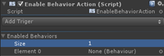
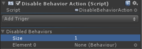

Enable/Disable Behavior Actions |
Top Previous Next |
|
Enable Behavior Action  The Enable Behavior action enables a list of Unity behaviors whenever the associated trigger(s) are fired. This action is a one-shot custom trigger action. The behaviors list contains the behaviors that the action will enable when triggered. Behaviors can be added by drag and drop.
Disable Behavior Action  The Disable Behavior action disables a list of Unity behaviors whenever the associated trigger(s) are fired. This action is a one-shot custom trigger action. The behaviors list contains the behaviors that the action will deactivate when triggered. Behaviors can be added by drag and drop.
|